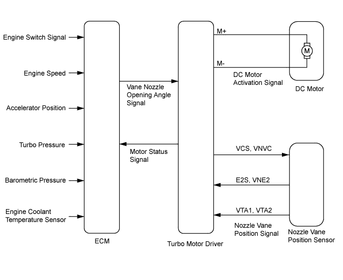
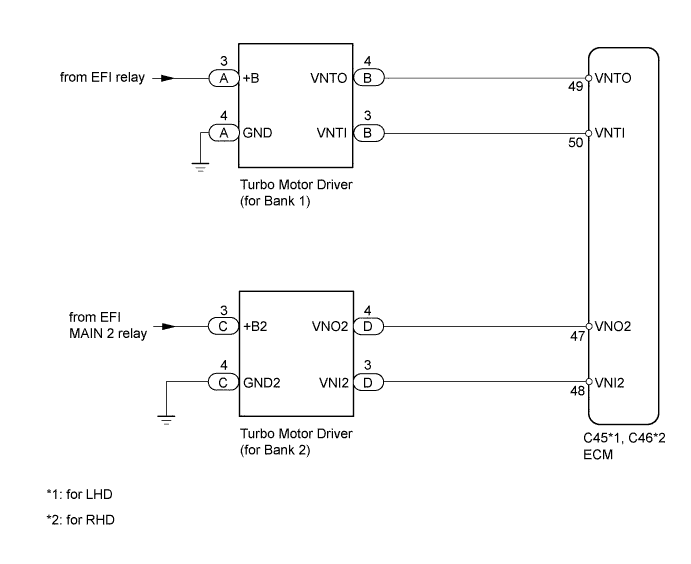
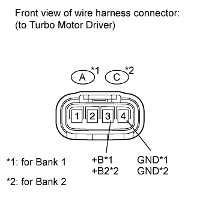
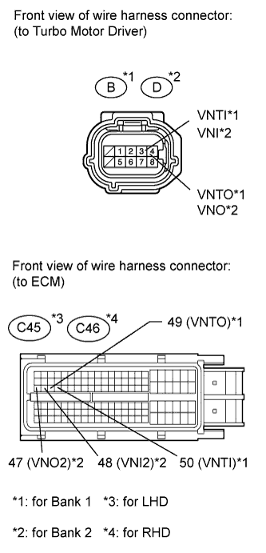

DTC P00AF Turbocharger/Supercharger Boost Control "A" Module Performance |
DTC P00B0 Turbocharger/Supercharger Boost Control "B" Module Performance |

| DTC Detection Drive Pattern | DTC Detection Condition | Trouble Area |
| After idling for 5 seconds | When a communication error occurs between the turbo motor driver (for Bank 1) and ECM (1 trip detection logic). |
|
| DTC Detection Drive Pattern | DTC Detection Condition | Trouble Area |
| After idling for 5 seconds | When a communication error occurs between the turbo motor driver (for Bank 2) and ECM (1 trip detection logic). |
|

| 1.INSPECT TURBO MOTOR DRIVER (POWER SOURCE CIRCUIT) |
 |
Disconnect the turbo motor driver connector.
Measure the voltage according to the value(s) in the table below.
| Tester Connection | Condition | Specified Condition |
| Turbo motor driver connector-3 (+B) - Turbo motor driver connector-4 (GND) | Engine switch on (IG) | 11 to 14 V |
| Tester Connection | Condition | Specified Condition |
| Turbo motor driver connector-3 (+B2) - Turbo motor driver connector-4 (GND2) | Engine switch on (IG) | 11 to 14 V |
Measure the resistance according to the value(s) in the table below.
| Tester Connection | Condition | Specified Condition |
| Turbo motor driver connector-4 (GND) - Body ground | Always | Below 1 Ω |
| Tester Connection | Condition | Specified Condition |
| Turbo motor driver connector-4 (GND2) - Body ground | Always | Below 1 Ω |
|
| ||||
| OK | |
| 2.INSPECT TURBO MOTOR DRIVER (for Bank 1 and Bank 2) |
Remove the rear fender splash shield sub-assembly RH.
Remove the front fender liner LH.
Connect the intelligent tester to the DLC3.
Turn the engine switch on (IG) and turn the tester on.
Enter the following menus: Powertrain / Engine / DTC.
Read the DTCs.
Clear the DTCs (Click here).
Turn the engine switch off.
 |
Interchange the connectors for the turbo motor driver of bank 1 and bank 2.
Start the engine.
Enter the following menus: Powertrain / Engine / DTC.
Read the DTCs.
| Display (DTC Output) | Proceed to |
| DTCs change | B |
| DTCs do not change | A |
|
| ||||
| A | |
| 3.CHECK HARNESS AND CONNECTOR (TURBO MOTOR DRIVER - ECM) |
Disconnect the turbo motor driver connector.
 |
Disconnect the ECM connector.
Measure the resistance according to the value(s) in the table below.
| Tester Connection | Condition | Specified Condition |
| C45-49 (VNTO) - B-4 (VNTO) | Always | Below 1 Ω |
| C45-50 (VNTI) - B-3 (VNTI) | Always | Below 1 Ω |
| C45-47 (VNO2) - D-4 (VNO2) | Always | Below 1 Ω |
| C45-48 (VNI2) - D-3 (VNI2) | Always | Below 1 Ω |
| Tester Connection | Condition | Specified Condition |
| C46-49 (VNTO) - B-4 (VNTO) | Always | Below 1 Ω |
| C46-50 (VNTI) - B-3 (VNTI) | Always | Below 1 Ω |
| C46-47 (VNO2) - D-4 (VNO2) | Always | Below 1 Ω |
| C46-48 (VNI2) - D-3 (VNI2) | Always | Below 1 Ω |
| Tester Connection | Condition | Specified Condition |
| C45-49 (VNTO) or B-4 (VNTO) - Body ground | Always | 10 kΩ or higher |
| C45-50 (VNTI) or B-3 (VNTI) - Body ground | Always | 10 kΩ or higher |
| C45-47 (VNO2) or D-4 (VNO2) - Body ground | Always | 10 kΩ or higher |
| C45-48 (VNI2) or D-3 (VNI2) - Body ground | Always | 10 kΩ or higher |
| Tester Connection | Condition | Specified Condition |
| C46-49 (VNTO) or B-4 (VNTO) - Body ground | Always | 10 kΩ or higher |
| C46-50 (VNTI) or B-3 (VNTI) - Body ground | Always | 10 kΩ or higher |
| C46-47 (VNO2) or D-4 (VNO2) - Body ground | Always | 10 kΩ or higher |
| C46-48 (VNI2) or D-3 (VNI2) - Body ground | Always | 10 kΩ or higher |
|
| ||||
| OK | |
| 4.REPLACE ECM |
Replace the ECM (Click here).
|
| ||||
| 5.REPAIR OR REPLACE HARNESS OR CONNECTOR |
|
| ||||
| 6.REPLACE TURBO MOTOR DRIVER (for Bank 1 or Bank 2) |
Replace the turbo motor driver (for Bank 1 or Bank 2) (Click here).
| NEXT | |
| 7.CONFIRM WHETHER MALFUNCTION HAS BEEN SUCCESSFULLY REPAIRED |
Connect the intelligent tester to the DLC3.
Clear the DTCs (Click here).
Turn the engine switch off.
After starting the engine, idle it for 5 seconds.
Enter the following menus: Powertrain / Engine / DTC.
Confirm that the DTC is not output again.
| NEXT | ||
| ||